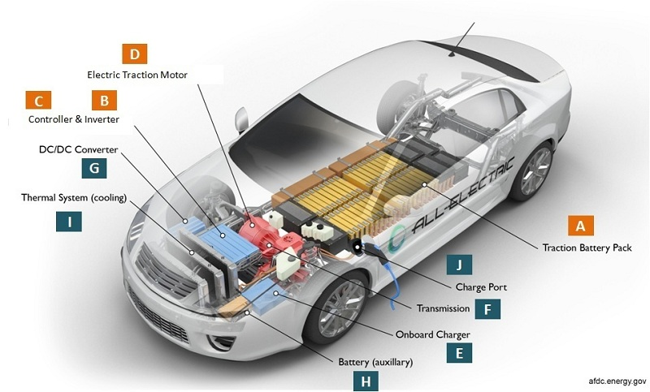
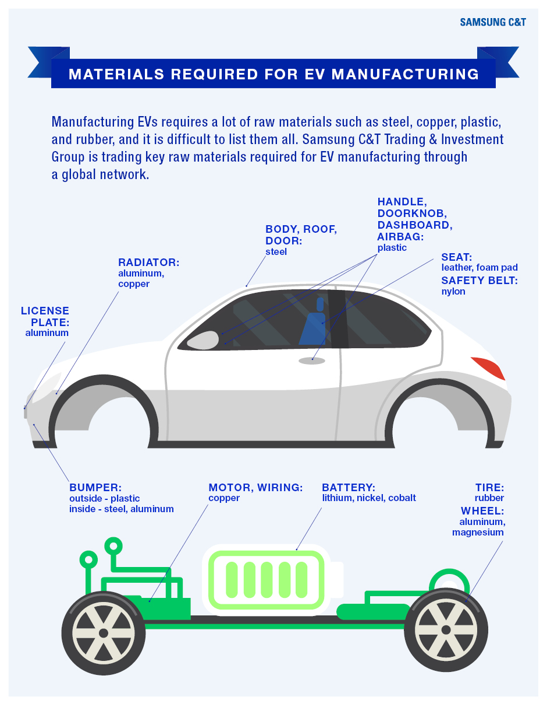
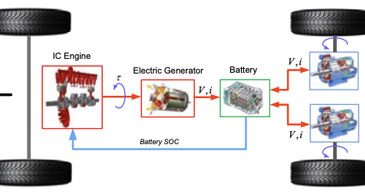
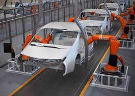
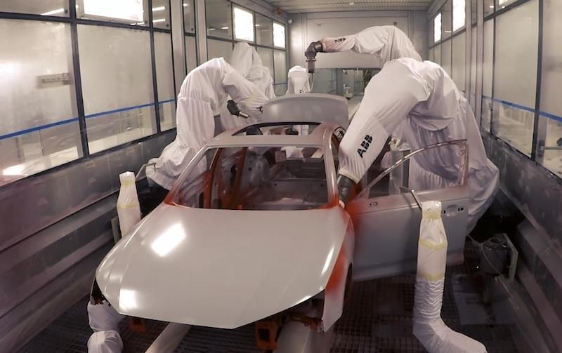
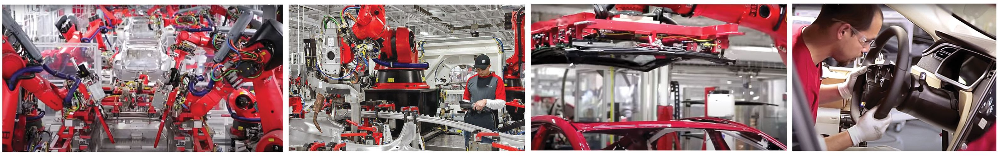

Know Your EV
Components

Unlike primary batteries that have a limited lifetime of chemical reactions that produce energy, the secondary-type batteries found in electric vehicles are rechargeable storage cells. Batteries are situated in T-formation down the middle of the car with the top of the "T" at the rear to provide better weight distribution and safety. Batteries for electric cars have been made using nickel-iron, nickel-zinc, zinc-chloride, and lead-acid.
Weight of the electric car has also been a recurring design difficulty. In electric cars, the battery and electric propulsion system are typically 40% of the weight of the car, whereas in an internal combustion-driven car, the engine, coolant system, and other specific powering devices only amount to 25% of the weight of the car.
Other technologies in development may provide alternatives that are more acceptable to the public and low (if not zero) emissions. Use of the fuel cell in a hybrid automobile is the most promising development on the horizon, as of 1999. The hybrid automobile has two power plants, one electric and one internal combustion engine. They operate only under the most efficient conditions for each, with electric power for stop-and-start driving at low speeds and gasoline propulsion for highway speeds and distances. The electric motor conserves gasoline and reduces pollution, and the gas-powered portion makes inconvenient recharging stops less frequent.
Fuel cells have a chemical source of hydrogen that provides electrons for generating electricity. Ethanol, methanol, and gasoline are these chemical sources; if gasoline is used, fuel cells consume if more efficiently than the internal combustion engine. Fuel cell prototypes have been successfully tested, and the Japanese began manufacturing a hybrid vehicle in 1998. Another future hope for electric automobiles is the lithium-ion battery that has an energy density three times greater than that of a lead-acid battery. Three times the storage should lead to three times the range, but cost of production is still too high. Lithium batteries are now proving to be the most promising, but limited supplies of raw materials to make all of these varieties of batteries will hinder the likelihood that all vehicles can be converted to electrical power.
Raw Materials

The electric car's skeleton is called a space frame and is made of aluminum to be both strong and lightweight. The wheels are also made of aluminum instead of steel, again as a weight-saving method. The aluminum parts are poured at a foundry using specially designed molds unique to the manufacturer. Seat frames and the heart of the steering wheel are made of magnesium, a lightweight metal. The body is made of an impact-resistant composite plastic that is recyclable.
Electric car batteries consist of plastic housings that contains metal anodes and cathodes and fluid called electrolyte. Currently, lead-acid batteries are still used most commonly, although other combinations of fluid and metals are available with nickel metal hydride (NiMH) batteries the next most likely power source on the electric car horizon. Electric car batteries hold their fluid in absorbent pads that won't leak if ruptured or punctured during an accident. The batteries are made by specialty suppliers. An electric car like the General Motors EV1 contains 26 batteries in a T-shaped unit.
The motor or traction system has metal and plastic parts that do not need lubricants. It also includes sophisticated electronics that regulate energy flow from the batteries and control its conversion to driving power. Electronics are also key components for the control panel housed in the console; the on-board computer system operates doors, windows, a tire-pressure monitoring system, air conditioning, starting the car, the CD player, and other facilities common to all cars.
Plastics, foam padding, vinyl, and fabrics form the dashboard cover, door liners, and seats. The tires are rubber, but, unlike standard tires, these are designed to inflate to higher pressures so the car rolls with less resistance to conserve energy. The electric car tires also contain sealant to seal any leaks automatically, also for electrical energy conservation. Self-sealing tires also eliminate the need for a spare tire, another weight- and material-saving feature.
The windshield is solar glass that keeps the interior from overheating in the sun and frost from forming in winter. Materials that provide thermal conservation reduce the energy drain that heating and air conditioning impose on the batteries.
Design

Today’s EVs are very different from ICE (internal combustion engine) gasoline-powered vehicles. The new breed of EVs has benefited from a series of failed attempts to design and build electric vehicles using traditional methods of production used by manufacturers for decades.
There are numerous differences in how EVs are manufactured when compared to ICE vehicles. The focus used to be on protecting the engine, but this focus has now shifted to protecting the batteries in manufacturing an EV. Automotive designers and engineers are completely rethinking the design of EVs, as well as creating new production and assembly methods to build them. They are now designing an EV from the ground up with heavy consideration to aerodynamics, weight and other energy efficiencies.
The single biggest modification of the car is the underbody. While this structure has been very similar in the past, with EVs there is no engine and there are no exhaust systems needed. There is an aerodynamically designed full belly pan under the EV that contains trays where the battery pack is placed. With more and more variations and shapes of battery packs available for different models, the challenge is to be able to make these variations on one Flexible Manufacturing System (FMS). Since all EV battery cells are quite heavy, flexible robotic lines are necessary.
In addition, FMS production lines must accommodate many new robotically performed joining methods. In many instances spot welding is being replaced by an increased use of self-piercing rivets, gluing, sealing, flow drilling, and laser welding — and are specifically chosen depending on the tray used for each particular type of battery cell.
The EV’s inner structure is called a “space frame” and is made of strong, lightweight aluminum — and for additional weight-savings, the wheels are also made of aluminum instead of steel. Using manufacturers molds, these aluminum parts are poured at a foundry. In addition, the steering wheel and seat frames are made of magnesium, a strong, lightweight metal. Even the body panels are made of lightweight aluminum, or an impact-resistant composite plastic. Both materials are recyclable, providing long-term disposal advantages.
In an effort to reduce weight, the structural frame, seat frames, wheels and body are designed for high-strength, safety — and the lightest possible weight. New configurations have been developed that provide support for the components and protection of the vehicle occupants with minimal mass and use of high-tech materials, including aluminum, magnesium and advanced composite plastics.
The windshield is solar glass that keeps the interior from overheating in the sun and frost from forming in winter. Materials that provide thermal conservation reduce the energy drain that heating and air conditioning impose on the batteries.
Some features did have to be eliminated or changed while leaving all the comforts drivers find desirable and adding new considerations as well. One feature that was removed because of space restrictions was the spare tire. This was possible because the EV tires contain a sealant to repair any leaks automatically. In addition, the tires are rubber and designed to inflate to higher pressures, so the car rolls with less resistance to conserve energy.
An added safety consideration was a pedestrian warning system, because EVs run so quietly that pedestrians may not hear them approach. Driver activated flashing lights and beeps warn pedestrians that the car is approaching. This system works automatically when the car is put in reverse as well.
Manufacturing process
Automotive engineers, as well as manufacturing professionals, have given the EV manufacturing process as much design consideration as the overall design of the vehicle itself. To illustrate how EV manufacturing can be successfully accomplished we’ve taken a brief look at how Tesla builds its EVs using many high-tech robotic approaches.
Tesla’s goal to sell 20 million vehicles by 2030 will undoubtedly be realized. With EV sales projected to hit 300 million by 2030, Tesla and other manufacturers will be working at a break-neck pace to meet consumer demand.

Body assembly
The body assembly process begins with coils of aluminum of different gauges, which are uncoiled into a blanking machine that flattens the metal into blanks. The blanks are then fed into an enormous stamping press. At this stage, large custom-made dies form the body panels, which are then transported to the body center.
This is where the EV begins to be assembled — starting with the underbody, which is the main floor system of the EV where the batteries are seated. The body sides are then added to provide internal reinforcement as well as the outer skin. Inside the framing is where the body sides, the underbody and the front end of the vehicle are all married together.
One of the most unique things about the body center is that there are five different overall joining methods for the body shell, including adhesive, self-piercing rivets and cold metal transfer, as well as conventional resistance welding and a delta spot welding system. When the body leaves the body center it is a fully completed body shell — ready to be prepped and painted.

Paint shop
A Kuka robot places the body onto a conveyor that transports it to the paint shop where multiple pretreatment primer base coats are applied. Specially designed paint robots work in an extremely clean environment to produce a beautifully painted body, ready for general assembly. At this point, each EV moves through the factory autonomously powered by its propulsion system and batteries. Since the EV has no internal combustion engine there is no potential danger of exhaust fumes as it travels to the general assembly area.

General assembly
The Tesla EV is assembled from inside out. Automation is used to the fullest — as the same robot that installs the seats, then changes tools to position the windshield, apply adhesive and seat it on the vehicle. In total, about 1,000 robots perform very diverse tasks in the production of the Model 3. Since robots are extremely good at repeatability and accuracy of motion needed, employees are utilized in more flexible situations where human intelligence is required.
EV manufacturing is unique in that many of the components are completely different than for traditional ICE powered vehicles, including the drive units, battery pack, and battery modules. Many of those components did not previously exist, which required Tesla to build them. However, there are also thousands of fewer components in an EV, so it only takes about two days for a Tesla Model 3 to go from raw material to a completed vehicle.

Quality control
Every part used in the operation of the EV has been tested during the many assembly steps at the production line. After the battery pack and propulsion unit have been installed, the car can be driven inside the plant. This shows that the EV is working several steps before it is completed. Due to the individual quality checks at each stage of assembly, the only major quality control requirements are a comprehensive set of tests and inspections.
Limited byproducts or waste
There are limited byproducts from the manufacture of electric cars — and waste in the assembly factory is minimal to nonexistent. Parts, components and subassemblies are made elsewhere and delivered to the assembly plants. Trimmings and other waste are recaptured during manufacturing and most are recyclable.
The future
EVs are critically important to the future of the automotive industry and to the protection of the environment. Ultimately, what form the electric vehicle will take and its total acceptance by the public are still uncertain. Consumption of decreasing fossil fuels and concerns over air and noise pollution are major issues today. The costs of the energy being consumed — and pollution caused by the complications of recycling gasoline-powered cars — are both driving forces that are leading the success of the electric car.
There are several things that are certain. The EV industry is here to stay — and the list of EV manufacturers will continue to grow. New and better technologies will continue to be developed — and charging methods will improve and be faster. As the EV market grows in the US and worldwide, the positive effects of moving to electric vehicles will be reflected in the environment and our everyday lives for years to come.